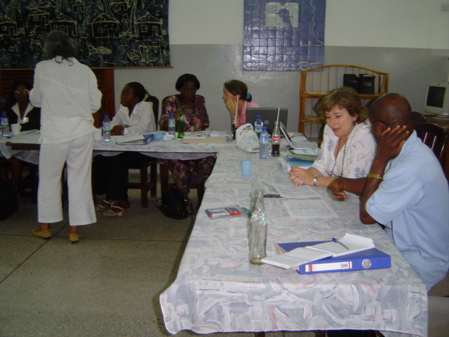
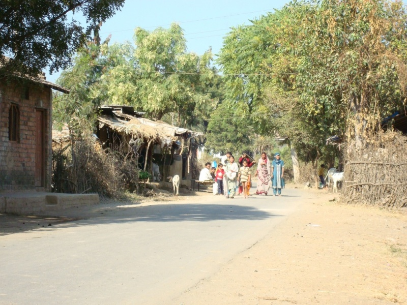

Main Page
a qualitative research skills workshop in progress
This site is a collaborative space for researchers interested in qualitative research methods. It is maintained by the RECOUP consortium.You can start browsing the manual using the above list of sections, starting with the Introduction. The introduction also explains the Creative Commons licensing of the manual, but further information can be found on the RECOUP:Copyrights page.
To find out about alternative ways of accessing or downloading the manual, see our help pages. To find out about collaborative aspects, please visit the RECOUP Community page.
Introduction
Introduction to the manual
Over the past few years there has been a growing interest in the value of qualitative social research in the South. While there is a welcome recognition of the potential inherent in rigorous and good quality qualitative approaches to research, the know-how pertaining to the why and how has not been as widely disseminated as it could be. This manual is a small contribution to redress this imbalance and to aid greater collaboration amongst qualitative researchers. It provides a wide range of materials that might be of use in intensive training programmes, encouraging a critical engagement with key issues as well as the development of basic research skills.
The manual is an outcome of a research partnership ( RECOUP) involving institutions of the South and the North. Our partnership not only demanded a range of research skills, both quantitative and qualitative in nature, but it also brought together people from varied disciplines, where it became crucial to foster a shared understanding, not only of how to do research, but also around what we meant by research itself. This manual presents a snapshot of how we developed a programme that enabled all of us to engage in a useful dialogue (and indeed practice various skills) about qualitative research. It formed the backbone of workshops that were organised in India, Kenya, Ghana and Pakistan, and then again in India. What is presented here might seem straightforward: but the reality is far from this. Each workshop helped us evolve this manual in different ways and it has changed considerably from the original – we hope for the better. The spirit of dialogue, experimentation and a belief in the value of qualitative research that we developed during the process of refining the manual underpins our desire to share this work. We do not believe the process is over now that the manual is on the web: we hope everyone who reads and uses this material will tell us how it went, and engage with us and other users to adapt and improve it.
Who can use this manual?
This manual is designed to assist facilitators, with some level of experience of teaching and practice of qualitative research, to train others to conduct qualitative research, for example:
academicians in the Global South who may wish to train graduate students
researchers who would like to train people working in local NGOs, who are now more commonly becoming involved in research
people working in international organisations who may wish to train their staff members to undertake or commission qualitative research in Southern contexts.
The skills developed through this approach would be of benefit even for evaluation of programmes, a task commonly undertaken by many agencies.
Ideally, participants should already have some background knowledge of qualitative research. Some participants might have hands-on experience, but more may have a rudimentary knowledge of the theory of qualitative research, often without any practical experience. Facilitators might consider providing people in the former category with some basic readings as preparation for the workshop (though the manual is designed to be as user-friendly as possible for people with very little academic background in social research). In some places we have also assumed that participants may have had more experience, or have more understanding, of carrying out household surveys or analysing quantitative research projects: one of our underlying principles has been to find ways of helping such participants ‘unlearn’ techniques that are better suited to quantitative methods (such as following a questionnaire without deviation) than to qualitative methods.
It is, however, essential for the facilitator to have knowledge and experience of undertaking qualitative research: the more often that facilitators can refer to practical examples from their own experience, the better. It is also highly desirable for two or more people to act as facilitators: though one of the authors of this manual has led a workshop on his own, it was exhausting and not as good for the participants as those workshops in which two or three people shared the presentations and assisted with small group work and provided feedback.
Suggestions on how to use the manual
This manual can be used as it is to run a training programme, but we would encourage you not to use it as a “prescription”. We hope that you will adjust the manual (for example, by changing the number of days, or the suggested readings) to suit the needs of your particular situations. An important issue to flag here is that the manual should be used by the facilitator and NOT the participants. It is not designed to be a stand-alone text to be given to the participants for them to use on their own: we believe strongly that much of the benefit of using our approach comes from people learning together, and undertaking practical exercises and small-group work to reinforce the messages and help to develop the necessary skills.
Throughout the manual we are encouraging a very interactive and engaged learning style, driven by a focus on ‘learning by doing’. Many sessions involve brain-storming, or small-group work, and we recommend keeping the number of sessions involving a didactic, lecture style, to the minimum. But do experiment with alternative activity-based teaching methods if you are happier with them, if they suit your participants better, or you just think they will work better. In keeping with this approach, we have put in place a 7 day programme which involves a range of activities, including, for example, conducting practice interviews, a fieldwork observation exercise, and some hands-on experiences of coding. These activities range from working in a one-to-one scenario, conducting small group tasks, and working in a whole-group setting. Each session is prefaced with a list of things that will help you to run the session (for example: flip charts, audio recorders). We have also included a list of readings that will support you, and some readings which might be useful to share with the participants. Once again, if you’d rather use a computer and projector to record the responses of participants elicited by brainstorming, instead of a flip chart, blackboard or whiteboard, we would encourage you to try this out – it has sometimes worked for us.
As noted earlier, the activities involve a lot of engagement with the participants, and the facilitator’s role is to encourage discussions. The sessions which worked well for us are the ones when the participants got engaged and really spent time making sense of the activities, and we think time is necessary to let the issues sink in, so don’t try to rush things! In order to support some of this interaction we have, at various places, provided a list of responses generated at our various workshops, which can be useful supplements to your own discussions. These are not the only possible responses, and are provided to give you a sense of the range of likely ones – and to help you prepare for how to respond if similar responses come up in the sessions you run.
Open Educational Resources and Creative Commons
This is an `open access' work: an Open Educational Resource or Open CourseWare. We explicitly allow using and re-using the materials for non-commercial purposes, and if the materials are useful and are used, that will give us a great deal of pleasure.
As an open educational resource, the materials are licensed under a Creative Commons By-NC-SA license, allowing you to reuse the materials provided that you do not make commercial use and share any derived materials under the same license. The license also asks that you acknowledge this manual as the source (so that other people can easily find it) and let us know how you have developed the ideas. (The license text is available on the Creative Commons site, and further details can be found on RECOUP:Copyrights.)
Moreover, beyond the text of the manual, this wiki itself is a community resource. We welcome and encourage contributions, comments, amendments, translations: This is your resource. Read the Community page to find out more.
Reading and downloading
Besides chosing a license that make the material accessible for reuse from a legal perspective, we have also taken great care to make sure that the materials can be used easily from a technical perspective. For reading, the materials are presented in a number of different ways.
For reading online, you have these options:
For full interactivity, you can of course also read the text on the present wiki.
Internet connectivity and low bandwidth are serious issues at many less resourced institutions, and if you find that that the html version is too slow to use, you can use this version instead. It has very small pages (conforming to low bandwidth accessibility guidelines), and you can turn images off. You can also access this version through the switch to plain text link, which will switch the whatever page you are reading to plain text.
You can also download the manual, in a number of ways:
While browsing the wiki, you can download individual pages as PDF, using the in-built 'Download as PDF' facility. Simply click the 'Download as PDF' link, that can be found in the 'toolbox' left-hand menu, to download the present page as PDF.
Likewise, you can download any individual page as Open Document Text (ODT), by using the 'Download as ODT' link also located in the 'toolbox'. To edit the ODT document, see Help:OpenOffice.
When browsing the wiki, you can of course also download the wiki text, using the edit (or view source) links for the manual pages or various sections.
However, you can also download the manual as a single pdf file from our downloads page, and you can order printed copies from a print-on-demand service. See downloads for further information.
Keeping local copies. If you wish to make the manual available to your students locally, for instance while running a course using these materials at your institution, but you are suffering from poor internet connectivity and low bandwidth, we can offer you an easy-to-install mirroring solution, that provides mirroring for your local area network. Please see Help:Access for further information.
We welcome your feedback on the usability of the manual. Please contact us with any feedback you may have on technical or other aspects. Information about access can be found on Help:Access.
Contributing
At the first glance, the present manual is simple a web site: It can be read, and used, just like any other website. However, those familiar with wikis will already have noticed that the manual is presented as a wiki, using the same software (namely MediaWiki) as Main Page.
This means that you can not only read this manual, but you can contribute to it. Anybody can create an account using the 'Log in / create account' link at the top right, and start contributing. To find out more about contributing, visit the Help:Contents page.
Hopes and fears
In putting together this manual we are aware of some assumptions that we need to reflect upon:
We believe strongly in the value of qualitative research, but we consider that “quality qualitative research” is imperative. We do not believe that these sessions, by themselves, will be sufficient to shape good qualitative researchers. Rather, we hope to support some initial steps towards participants considering, learning and engaging with the processes that are essential for good qualitative research. The skills being developed in courses run with the help of this manual require further practice, reflection and updating.
Despite hosting this manual on the internet, we are not assuming that the only people who will find this useful and are likely to be interested will have access to the internet. We would encourage you to share these materials with other colleagues who might find them useful. As mentioned above, printable versions of the material are available from this website. We strive to find the most accessible ways of sharing this information and any thoughts from you on how best to do this will be very welcome.
In no way do we think that we have covered all the important issues in qualitative research. We are fully aware of the fact that we have engaged with only some of the central skills and a whole world of research methods and other issues still remain unaddressed. So we cannot stress strongly enough how much we would welcome feedback on any points which you feel “should” be included in any basic course engaging with qualitative research -- and session plans, handouts, PowerPoints and so on to help make these suggestions a reality. We would also welcome information on how the manual worked for you – the changes that you made or did not make; how easy or complicated the handouts were; any essential readings that would be useful to share with others. And if you decide eventually not to use the materials for some reason, do let us know: all feedback will be incredibly valuable. Hosting it on the web as an Open Educational Resource will hopefully make this task much simpler, and we hope to develop a community of qualitative research practice that will be much more stimulating, rewarding and interactive than is possible through the use of other media.
As a final note, we repeat: we see this manual as a starting point, not a final product. We know we have not addressed many key philosophical issues that many people (ourselves included) believe should be thoroughly discussed before a researcher goes into the field: but such discussions can be found elsewhere and we do not want to replicate these excellent resources. We believe that training courses based on this manual have the ability to lay strong foundations for people to go on to become good qualitative researchers, even though the manual addresses only a limited range of issues. We hope that you will be inspired to use it, and with your ingenuity adapt and improve it.
Nidhi Singal, University of Cambridge
Roger Jeffery, University of Edinburgh
Overview
Basics
This manual has been designed to help facilitators run workshops with small groups (between 10 and 16 participants). We think this size is ideal: it is not so small that there's no opportunity for mutual learning, nor so large that it is hard for every participant to make contributions to discussions. In addition, in some sessions (Semi-structured interviews, Ethnographic fieldwork, for example) facilitators should give individual feedback to participants, for example on interviewing styles and on fieldnote writing styles. This means that there should be at least two facilitators who are familiar with the whole course (though they do not necessarily have to attend every session). In our experience, we found the presence of three or four facilitators was better than relying on only two.
Try to find a room that can easily accommodate all the participants in a circular or U-shaped configuration. We would strongly discourage a lecture style lay out. It would be useful to have spaces (small rooms, or simply open spaces or various corners in a bigger room) that can allow for ‘break out’ discussions. These break-out spaces would ideally be used to help participants to work on a task in smaller sub-groups.
Most sessions will benefit from a flip-chart, or failing that a blackboard or a whiteboard (with good clear pens) as well as a computer and data projector and white screen. If you can also tear off flip-chart pages and put them up around the room for the duration of the workshop, that will help to reinforce some messages.
This manual has been designed to support a 7-day workshop, with multiple sessions suggested for each day (even then at times we found ourselves ‘rushing’ through things). Depending on your needs and circumstances, the workshop might be best timetabled with some “time off” for the participants to move into the ‘real world’ to try out some of the skills that have been discussed in the sessions. For example, a whole day would be needed for a fieldwork task to be carried out, for notes to be written up and made available for discussion. In such a scenario, the task could be done over Saturday, notes etc written over Sat-Sun., which would then be available for discussion on the Monday. Another way of running the training might be on the basis of one day a week, over about 2 months.
Below we suggest a particular structure for a 7-day workshop, but we would encourage you to experiment with different sequences. We think that the sessions on 'Getting Started' and 'Qualitative Research' must come at the beginning, and the session on evaluation obviously comes at the end (though, in this session we have also suggested some daily evaluation activities you might like to run, so it is worth considering this session as you are planning your workshop). The intervening sessions of the workshop could be combined in different ways. You may also wish to leave out some sessions, to give others more or less time than we suggest, or introduce new topics and sessions of your own.
All the information that we have provided in this manual is open access and we encourage you to use and adapt these materials in ways that you think are most beneficial for the needs of your team/participants. We would however encourage you to share with us the kind of adaptations you have made, things you found useful or not so useful. Your experiences will contribute immensely to better learning for all the others who are engaged in similar efforts.
Sample Timetable
This sample timetable is also available on Overview Handout:
Getting started
Introduction and overview of the workshop
Time: 15-30 minutes
Objective: To introduce the aims of the workshop.
Preparation: Try to ensure the setting is egalitarian, all sitting round a common space (board room style, and not a lecture style).
Process: Led by the workshop facilitator, start with a ‘getting to know you’ exercise, especially if people are not already familiar with each other.
Introduce participants to the aims of the workshop, which can be broadly summed up as:
to develop a shared understanding of research using qualitative methods.
to provide an opportunity to critically discuss the strengths and weaknesses of the different approaches to qualitative data collection.
to provide an opportunity to experience the use of qualitative research methods, both for participants with a ‘book knowledge’ of these methods and for those with more experience with the use of quantitative methods.
Once the participants are familiar with each other and are aware of the broad aims of the workshop, provide participants with an overview of what will happen over the next few days: circulate the first handout (hand out: Overview of the workshop).
Talk the participants through the handout and highlight the following:
Acknowledge the research experience there may already be in the room and stress the need to learn together, to actively engage with others and to build on existing knowledge and experiences. Hence stress that all sessions must have a strong element of participation if they are to work properly.
Point out that this training programme provides an opportunity to practice various skills, not only within sessions but also tasks outside of the sessions that have been scripted. Engaging with workshop activities is essential as all sessions are heavily interlinked. Ask that everyone who attends takes part in all the activities. As the facilitator, make sure that no-one should sit around and watch while others do things (like role-playing in interviews) that might be embarrassing.
Recognise that there are lots of things that participants will be discussing and covering over the next few days. In order to make this task easier, a range of handouts and additional reading materials will be provided.
Encourage participants to take notes in a 'course diary'. This will help them to reflect about the sessions, and note down any questions and contributions that they wish to discuss.
Working towards shared goals
Time: 15-30 minutes
Objectives: To become aware of the different expectations that participants have from this workshop
Preparation: Packs of ‘Post-its’
Process: Explain that you want to find out more about the participants' expectations, feelings and thoughts about the workshop, and to share with them your feelings, thoughts and expectations, so that you can make sure during the next few days of the workshop you can respond most effectively to what the participants want/need.
Ask participants to write what they expect from the next few days. Each aim/expectation should be written on a single 'Post-it' (or use index cards and thumb-tacks). Ask participants to stick their aims/expectations on the board.
Allow time for questions and comments. Conclude by explaining that during the workshop you will try and respond to the various points that have been raised in the discussions, but be honest about expectations that you will not be able to meet.
Agreeing guidelines for working together as a group
Time: 20-30 minutes
Objectives:
For the group to decide the kind of guidelines that might be useful for smooth functioning of the workshop.
To gain a collective understanding of the reason for each guideline
Preparation:
Flip chart or chart to write on
Big markers
Process:
Explain that you want participants to agree on a set of guidelines, to help us all to work together in a productive and harmonious manner. Guidelines can help people to work better together, in a way that is fair and respectful to everyone's needs and contributions. Guidelines can help everyone feel comfortable in a group which is essential for successful learning.
Divide participants into small groups of three or four, and ask them to make a list of all the things they think should be included in the guidelines.
After 10 minutes bring everyone back together, and ask each small group in turn to share their suggestions.
Write their suggestions on flip chart. Each time another group makes the same suggestion, indicate this with a tick.
Check your own list (see below) and see if there are any items that you think are important but have not been identified by the groups. Consult with the participants: should these suggestions be included in the final list, or not?
Discuss the guidelines, allowing time for comments and questions. Does anyone think that any of the guidelines need to be amended or even removed from the list? How do other people feel about it?
Make certain (to the extent possible) that all the guidelines are acceptable to all participants.
Discuss who is responsible for making sure that the group observes the guidelines (it should be everyone!) and how participants wish to deal with situations where the guidelines are not respected.
A final agreed list should be written on a flip chart and permanently displayed on the wall of the room.
Here is an example of such a list, that emerged from discussions in one of our own workshops:
Workshop Guidelines:
Critique but do not criticise
When giving feedback use affirmatives and not negatives
Thank everyone at the end of the day
Have fun
Say when you don’t understand
Allow time for people to speak and express themselves
Confidentiality: no personal information shared in the workshop should be repeated outside the workshop
Qualitative research
What is good qualitative research?
Time: 45-60 minutes
Objectives:
To develop an appreciation of what makes a piece of qualitative research “good” qualitative research, by taking participants through a series of exercises in which they think through what is involved.
Preparation:
Flip chart and big markers (OR use someone sitting at a computer and typing in points raised so that they are shown on a projector screen)
Process:
Introduce this as a brainstorm, not a didactic session. Participants need to have their understandings stretched beyond the ‘text-book’ answers to questions like:
What is qualitative social research?
What makes it different from quantitative research?
What are the main methods of qualitative research?
Why might we want to use them?
Some examples of points raised by participants in some of our previous training sessions can be seen in the images below as well as the powerpoint on Good Qualitative Research - examples from workshop feedback  .
.
After the group brainstorm it will be useful to go through some of the points that have been highlighted in the power point Introduction to qualitative research  . Use this as an opportunity to clarify any doubts and build on the knowledge of the participants.
. Use this as an opportunity to clarify any doubts and build on the knowledge of the participants.
What are the characteristics of a good qualitative researcher?
brainstorming
Time: 45-60 minutesObjectives:
To help participants appreciate the central role of the researcher in a qualitative study
To establish the researcher as the main instrument in the research process
Preparation:
Big sheet of paper/ chart paper for each small group with a human figure (gender neutral) drawn on it
Process:
Ask participants to arrange themselves in smaller groups (of 3-4) and give each group a chart paper with an outline of a human figure (gender neutral). Ask participants to work in their small groups and make this figure into a ‘researcher’ – they can use words, symbols and anything else they might wish to use to develop their image of a good qualitative researcher. Participants will spend 15 minutes on the task.
Each group is then required to present their image of a good qualitative researcher to the whole group. Allow time for questions and discussions.
Additionally, you might like to draw on and review the images and presentation of examples from our workshops on the characteristics of a good qualitative researcher  that have been provided. Propose these to the participants and discuss their relevance (or even perceived irrelevance).
that have been provided. Propose these to the participants and discuss their relevance (or even perceived irrelevance).
What is reflexivity?
research diary
Time: 45-60 minutes
Objectives:
By the end of the session participants should understand the importance of reflexivity; of the researcher as the main research instrument in qualitative research; and of the research diary as a reflexive tool
Preparation:
Flip chart and big markers (OR use someone sitting at a computer and typing in points raised so that they are shown on a projector)
Process:
Ask participants to brainstorm in small groups and report back on the following questions:
What do we mean by reflexivity?
Why is reflexivity important?
How do we achieve it?
How are reflexivity and ethics related in research?
Some of these points may have been raised in the previous session: facilitators should choose whether to deal with them in the earlier session or come back and give them more time in this session.
To wrap up the discussion you can circulate the handout on reflexivity  .
.
Here is a sample list of some of the issues that participants should be discussing:
Reflexivity
Things we “take for granted” need to be challenged and made explicit
Regularly/ evolving
Change through time
Reflect on method
Is there consent from participants?
Contradictions between interview and behaviour; also between interview and general talk
Reliability of the research
Confidentiality and trust
Anonymity
Security of data
Reporting illegal/ abusive behaviour
Ethics
Sampling in qualitative research
Time: About 1 hour
Objectives:
By the end of the session participants should understand how strategic sampling and in-depth data makes qualitative research useful either for extending social science or for contributing to policy discussions
Preparation:
A Presentation on Sampling
 is available to be used or amended if desired
is available to be used or amended if desiredAn article by Bent Flyvbjerg was used in preparing the handout, and the presentation is available at (http://flyvbjerg.plan.aau.dk/Publications2006/0604FIVEMISPUBL2006.pdf). It makes a strong case for the contributions of case studies to social science. Depending on the participants, consider getting them to read this, either before or after the session.
A Handout on Sampling in Qualitative Research
 can also be distributed to participants.
can also be distributed to participants.Flip chart and big markers (OR use someone sitting at a computer and typing in points raised so that they are shown on a projector)
Process:
This session is likely to be didactic in nature and you can draw on the power point to begin the discussions. You will need to allow the session to develop slowly so that you can explain things clearly. It is important that participants understand that certain generalisations can be made based on small samples and qualitative research.
At the end of the session distribute the hand outs and ask participants to review them. This can be a difficult session and hence you need to be slow in your pace. Give time to participants for reading, discussing and consolidating their understandings.
Community scoping
Community scoping
Informal conversations
Observing the surroundings
Familiarising by walking
Participating in events
Capturing through images
Transect walk
One basic principle of qualitative research design is that the people being researched should be understood in their social context. This requires some means of understanding that context. This can be done in several different ways, depending on the purposes of the research. But there are at least two situations where ‘community scoping’ might play a part:
At the beginning of a community-based study (such as one in which ethnographic fieldwork is the main data collection method, or one in which the sample for semi-structured interviews is to be taken from one or two communities)
As a qualitative aspect of a household survey (where a cluster sample design leads to a relatively small number of communities, and where community characteristics are then fed into the quantitative analysis)
Some scoping activities could also be used (with suitable amendments) for people whose research case study will be an organisation.
Time: 90 minutes to 2 hours -- or more if you want to go into more detail on several PRA techniques.
Objectives:
By the end of this session participants should understand when and why community scoping might be carried out, how to do it, some of the pitfalls and some strategies to start the process of getting to know the basic details about a community, a village (or part of one), or an urban neighbourhood.
Preparation:
A Presentation on Community Scoping
 is available to be used or amended if desired
is available to be used or amended if desired A Handout on Community Scoping
 can be used, and a Handout on Sample Household Census Form
can be used, and a Handout on Sample Household Census Form  is available
is available Flip chart and big markers (OR use someone sitting at a computer and typing in points raised so that they are shown on a projector)
Process:
This session can be conducted through a mixture of didactic (presentation) and brainstorm approaches. The following areas should be discussed in separate sub-sessions, each of which might take 15-20 minutes:
What is involved in community scoping?
Brainstorm on things to be done to find out, relatively quickly, the important features of a community. (10 minutes)
When is community scoping an appropriate activity?
This is not necessarily something for all projects: when might it be useful? Discuss in whole group (15 minutes)
How should consent and access through 'gatekeepers' be negotiated?
Brainstorm about what kinds of gatekeepers are likely to be encountered in the particular settings; how to approach them to maximise access; how to avoid being identified with the interests of the gatekeepers or to be limited just to what they want you to do (15 minutes)
What participatory approaches (for example, map-making, transect walks, wealth ranking) are suitable for a scoping exercise?
Ask participants to share their experience of using participatory approaches. Try to get as complete a list as possible, and then consider the strengths and weaknesses of different kinds of method. It may be possible to carry out an exercise using one or two of these methods (for example, a ranking exercise; daily timelines) (15-30 minutes)
What are the main roles of a household census?
Brainstorm on factors to consider in deciding to carry out a census or other ways of collecting reliable data on households: the size of the community, the resources available, and the purposes of the research (what would you use a census for?) (10 minutes)
Introduce the sample census form (as a handout or as an overhead slide); explain the context. In groups of 3 or 4, discuss the strengths and weaknesses of this example (10 minutes) and report back to the full group (10 minutes)
What are the main issues in planning the process of community scoping?
Community scoping can be done as a routine task, in which case it is likely to be done poorly (with little detail or understanding of community processes). Such an approach may lead to further difficulties for researchers in that community. Brainstorm on the factors that are involved in a ‘good’ scoping exercise (10 minutes) Notes: community scoping should be seen as part of the opening of a positive relationship with members of the community; and it can be very revealing of community dynamics if the experience of scoping is documented properly.
Facilitator's Notes: The main points to get across
The importance of establishing egalitarian relationships at the start of the research process, such as being willing to answer personal questions as well as questions about the research – especially if the research involves the poor
The value of walking around and being seen by as many people as possible
The issues generated by getting permission from ‘gate-keepers’ as well as participants
The opportunities to use ‘participatory’ methods as well as semi-structured interviews to collect basic general community-level data
The potential of carrying out a simple census exercise
Community scoping is often an integral part of ethnographic fieldwork, which we elaborate upon in the session on Ethnographic fieldwork.
Resources and references
The general field of participatory rural appraisal (PRA) methods has been developed since 1990, and there is a very large literature and many resources. For the purposes of this session we are only introducing some of the techniques that have been developed: the philosophy behind the approach should also be considered, if you want to go further down this route.
The Food and Agriculture Organisation have a web-page with descriptions and examples of PRA methods, oriented towards natural resource use: see http://www.fao.org/docrep/w7483e/w7483e0a.htm
There are several handbooks of PRA methods: one general introduction is at http://pcs.aed.org/manuals/cafs/handbook/sessions7-9.pdf and more detail on transect walks and other techniques at http://pcs.aed.org/manuals/cafs/handbook/sessions10-12.pdf
Semi-structured interviews
Brief introduction to the purpose and role of individual interviews
Time: 20-30 minutes
Objectives:
To provide a brief overview of:
Semi-structured interviews: the purpose and role of interviews in social research
Different types of interviews (facilitators might wish to focus specifically on the reason why interviews are being undertaken in their project)
Preparation:
Presentation on introduction to interviews as a supporting guide
Flip charts
Process:
Begin by asking the participants to brainstorm the reasons they think that interviews are a good tool for data collection and list the points on a flip chart. The presentation on introduction to interviews  provides some examples from participants in other workshops, which can be added to the list generated.
provides some examples from participants in other workshops, which can be added to the list generated.
To make participants think more critically about interviews, you can ask them to think about difference between a research interview and an interrogation carried out by the police (another type of interview). Here issues of rapport, trust, purpose will come to the forefront.
Move on to discussing the different types of research interviews, highlighting that these are located on a continuum from a very structured to a completely unstructured interview focus. It is important to highlight the strengths of semi-structured interviews and what makes them a powerful method of data collection (especially for certain types of projects).
Designing a semi structured interview: “Our dental practices”
Objectives:
To enable participants to engage in the process of constructing an interview schedule
To make participants aware of the various styles of questioning and their appropriate use
Preparation:
Flip charts
Process:
There are THREE tasks for this session which takes participants through making a topic guide to designing an interview schedule.
Making a topic guide
Topic guide
Time: 25-35 minutesIntroduce the topic of dental health and set the scenario for the whole group.
The scenario: We have just received a one million dollar grant for the country’s Ministry of Health to investigate people’s dental practices and their perceptions of dental health so as to improve the dental health in the country. We, as a team, need to design an interview schedule and conduct interviews.
In order to construct an interview schedule, the participants must initially focus on designing a topic guide. Ask participants to think of topic areas that would be important to explore in order to achieve the aim of this research.
Invite suggestions about areas that need to be explored and note these on a flip chart.
Review the suggestions from the participants in light of the topics that have been identified in the examples provided in the facilitator’s notes. Discuss the points that have been overlooked by the participants and incorporate them into the discussions with the group.
Then put the topics in order on a list with numbered items and discuss the order of the topics (general to specific or vice versa – controversial or sensitive topics)
Here is an example of a topic guide produced through a group discussion  . You may wish to produce this as a handout.
. You may wish to produce this as a handout.
Different types of questions and the use of prompts and probes
Time: 30-40 minutes
Process:
Begin by looking at the topic guide and thinking about what sort of interview you want to achieve. Think about the different types of questions. Briefly introduce the different types of questions that can be asked in an interview.
Introducing questions: please tell me about when your interest in X began? Have you ever…?
Follow up questions: could you say more about…?
Specifying questions: how did X react to what you said? What did you do after that?
Direct questions: do you find it easy to follow lessons in the classroom?
Interpreting questions: do you mean that your leadership role in the school has changed?
Silence
Ranking/priority
Some say…do you agree
Association (3 words)
Closed
Open
Double barrelled (often used, but should be avoided)
Additionally, using the handout on 'Questions to be avoided  ' which has been provided as a framework, discuss with the participants the kind of questions which should be avoided in an interview. This can be done in a vibrant and engaging manner by involving the whole group in brainstorming such questions.
' which has been provided as a framework, discuss with the participants the kind of questions which should be avoided in an interview. This can be done in a vibrant and engaging manner by involving the whole group in brainstorming such questions.
The handout for prompts and probes  can be used to stimulate discussion on their function and importance in interviews
can be used to stimulate discussion on their function and importance in interviews
Designing interview questions
Designing a schedule
Time: 35-45 minutesProcess:
Ask participants to work in small groups to think about types of questions that they can construct based on the topics identified. Discussions might involve:
Are there any questions that could be useful opening questions?
Are there any questions that require sharing sensitive information and hence might be useful to place later in the schedule?
What kind of questions would be useful to gather the kind of information that we want? (Open ended, closed ended)
What prompts or probes might be appropriate and useful?
Bring the groups together and ask them to present their schedule to the whole group. Invite questions and comments. Encourage participants to recognise that in a semi-structured interview the schedule is a guide and hence there is a great degree of flexibility. The appropriate use of prompts and probes is therefore very important. You can map out the process of constructing an interview schedule on a flip chart to help participants recognise the process. The interview guide provided in Activity sheet 1  is an example of some of the questions that might be framed by the participants.
is an example of some of the questions that might be framed by the participants.
Here is a figural representation  of how an interview guide is generated, piloted, adapted and then used in the field. This can be a useful way of summing up the process for the participants.
of how an interview guide is generated, piloted, adapted and then used in the field. This can be a useful way of summing up the process for the participants.
Critiquing interview skills
Time: 20-30 minutes
Preparation:
An interview in progress video clip
Handout on 'Good and bad listening '
Flip charts
Process:
Introduce the clip, and ask the participants to view the DVD clip. Then ask the participants to rate the interview on a scale of 1- 10 (with 10 being excellent). Once these ratings have been collected ask the participants to list all the positives (which is much more difficult in this example) and then highlight the shortcomings.
Discuss with the participants strategies which could have helped improve the interview. The handout 'Good and bad listening  ' can be used during this discussion.
' can be used during this discussion.
The experience of “doing” and “being” interviewed
Doing and being interviewed
Time: 90 minutes to 2 hoursObjectives:
To give participants opportunity to practise their interviewing skills
To provide them with an opportunity to reflect on the process and experience of being interviewed
Provide opportunity to critical evaluate the components of a successful interview
Preparation:
Flip chart
Audio recorders
Interview schedule Activity sheet 2

Process:
Introduce the topic, its aims and objectives. Ask participants to work in pairs to take turns in interviewing their partner, using a give interview schedule, and then be interviewed themselves by the other person.
Provide participants with a copy of the interview schedule and ask them to consider the following:
How will you introduce yourself?
How will you conduct it?
What do you wish to achieve?
Ask participants to spend 30 minutes on the interview. Each participant must go through the experience of being an interviewer and of being an interviewee.
Bring everyone back to the group and facilitate a discussion (for about 20-25 minutes) on the following:
What is it like to be an interviewer?
What is it like to be interviewed?
Some alternative arrangements for this activity:
One of the pairs engaged in the task can be video recorded (after obtaining their permission). This can be used for the debriefing session.
With another pair you can set up an interview situation which the rest of the group watches 2 participants being interviewed. One of the participants (partner A) in the pair is (in confidence) instructed NOT to listen to the other (partner B), and to make it clear that s/he is not listening and not interested, by using any non-verbal cues (such as yawning, fidgeting, looking away etc). At the end of the exercise, discuss with the group the following points-
What did it feel like to partner B, not listening to A?
How did the A react?
How did B feel about the reaction?
What did it feel like to be A, and not to be listened to?
After any of these activities, ask participants to discuss:
What did you feel about undertaking this task?
Do you feel the interview was “successful”?
If yes, why? If not, why not?
What did you learn about yourself (as an interviewer)?
What were your skills that you found useful?
Ethnographic fieldwork
Introduction to ethnographic fieldwork
Recording informal conversations or actual events is an essential part of ethnographic fieldwork. This is about writing (in some senses, more than about ‘participating’ or ‘observing’): there is no point in observing if the observations remain locked up in the heads of the researchers. Therefore, the session is designed to lead up to a fieldwork exercise in which participants do some observation (in as participatory a way as is possible, given local constraints), to write fieldnotes, to share them with the facilitators and the rest of the group, and to engage in some positive reflection on their own and others’ writing styles. Some time is needed to get participants’ permission and understanding of the benefits of getting and giving constructive feedback in these ways.
Time: Allow for 3 hours (a half-day session)
Objectives:
The basic objective of this session is to help participants develop an understanding of the aims and process of ‘participating in order to write’ as a research tool. They should also be aware of the issues of negotiating access, deciding what to observe, how to record field-notes and what should be included in those notes. They should have reflected on important social and cultural norms that researchers must be sensitive to in the field.
By the end of the section, workshop participants should:
be aware of the main methodological issues raised by ethnographic fieldwork
be able to reflect on their own conduct in recording informal conversations in everyday life, and be able to assess critically other pieces of research carried out in this tradition
be aware of the main ethical and theoretical issues raised by this research method.
Preparation:
A Presentation on ethnographic fieldwork
 is available to be used or amended if desired
is available to be used or amended if desiredExamples of appropriate fieldnotes from your own research or some other appropriate project should be available (preferably 1-2 pages of two or three different styles of fieldnotes).
A Handout on note-taking during fieldwork and interviews
 is available, which outlines the different types of note-taking
is available, which outlines the different types of note-takingFlip chart and big markers (OR use someone sitting at a computer and typing in points raised so that they are shown on a projector)
Process:
Mixture of didactic (PowerPoint) and brainstorming activities, either in small groups or with the whole group. For example, at different points in the session you might want to get people into small groups (2-3 people in each) to:
to come up with three things that need to be recorded when carrying out a participant observation exercise (5 minutes), followed by feed-back sessions in which issues are listed and areas of agreement and disagreement are explored (10 minutes)
to discuss the ethical issues that arise in ethnographic fieldwork: brainstorm first in small groups on what they might be and how they might be resolved and then run a collective discussion
Consider distributing some handouts at the beginning or in the course of this session
Key Issues
During this workshop, participants’ writings will be available to the rest of the group: but usually, fieldnotes remain private to the researcher. This raises the more general issues of ‘for whom’ fieldnotes are written.
The ethical issues raised by fieldwork will also inevitably be raised by participants: decide whether you want to go into these in detail during this session, or address them in a dedicated session on ethics.
The fieldworker is the research instrument: what does this mean for issues of replicability and reliability? Are issues of validity central?
Roles in fieldwork: What do people actually do when they are doing ‘fieldwork’?
Planning access to field-sites, negotiating with gate-keepers, thinking through the implications of different kinds of roles in the field.
Negotiating ethical issues: privacy of field notes, anonymising individuals, what to do about people whose positions make them immediately identifiable?
Different kinds of field-notes: from jottings to field-notes.
Discussion of experience of diary-keeping; differences between research diaries and other kinds of field-notes.
Issues raised by emotions.
What to do with analytic thoughts.
Problems of doing research in different cultures: trying to understand and interpret other people’s behaviour
Problems of doing research in one’s own culture: how to make ‘the familiar’ seem ‘strange’, in order to understand and explain the ‘strange’.
Learning to describe cultural and body languages.
Basic issues in ‘talking with a purpose’: Where? When? How? What to do about reactivity, leading questions, the use of background information, confidentiality.
What to do about encouraging informal ‘focus groups’ in the field: how and what to record.
Feedback to the community at the end: who can see what? Who should see what?
Topics to be covered (not necessarily in this order):
Preparation for field visit
Time: 30 minutes
Objectives:
By the end of the field visit and follow-up period to write fieldnotes, participants should
understand what is involved in ‘participating in order to write’ and how this differs from everyday life
have experience of writing quick ‘head notes’ to use as memory jogs for writing fieldnotes
have begun to apply the lessons from the previous session about what kinds of things to record and how to record them
have begun to reflect on the choices they have made in their writing styles
be ready to contribute to a discussion of their own and other people’s fieldnotes.
Process:
It is not always easy to think of an appropriate setting in which course participants can be asked to carry out a short observational exercise. If you are running this course on a ‘one day per week’ basis, there would be time to ask participants to select their own site, arrange entry, deal with issues of consent and so on. In a course run over 6-8 consecutive days, it may be unreasonable to ask the participants to set this up. If the facilitators do have access to a site where these minimal requirements can be met, this can be considered. An alternative option is to use an initial visit to the place where research is planned, and to get course participants to write up what they have observed and heard in the visit.
Otherwise, the site for practice observational work must be one where public access is unrestricted, and yet course participants can do more than just observe people from a distance. Ideally, it should be possible to hear conversations, to speak to people at the site without unduly misleading them as to your purposes, and to find a range of activities to observe. There are two options we have used:
Ask all participants to visit a similar kind of setting, not necessarily the same examples. Two relatively successful sites we have used have been busy up-market shopping centres, and local temples. This helps with the feedback session, since all participants can be given the same orientation and research question. You might like to consider the example handout for the shopping-centre fieldwork task (Fieldwork Tasksheet 1
 ) and the example handout for the place of worship fieldwork task (Fieldwork Tasksheet 2
) and the example handout for the place of worship fieldwork task (Fieldwork Tasksheet 2  ).
).Allow participants to use their own initiative and select a site they have access to for personal reasons. The advantage of this is that it allows participants to fit the observational exercise into what may be busy personal lives, and makes it more likely that they will have to report on conversations they have been part of. The disadvantage is that you may find it hard to come up with sensible common research questions. Participants often do not realise (until after the event) how different ‘observing in order to write’ is from carrying out one’s routine daily lives – but this is a good lesson to learn!
In either case, participants need clear instructions about what to do, whether you want them to take notes at the time, how long they should spend at the site, and so on. Handouts explaining the task should be adapted to suit your own purposes before being given out, or used as part of a PowerPoint presentation to explain the task.
Feedback after field visit
It is relatively easy to get people to do a piece of fieldwork observation in a public space. It is much harder to get them to write about it in ways that are clear, revealing, and available for themselves (and, in group projects, to others). Good fieldwork writing is essential in order to understand and analyse well after the event. This is a crucial session, and may take quite a lot of planning and quite a long time to run, depending on the number of participants.
Time: 90 minutes
Objectives:
By the end of this session, participants should
have discussed real-life examples of different ways of writing fieldnotes
have received some feedback on their own efforts, both from other course participants and from the course facilitator
have a clear idea of how they might be able to improve their fieldwork techniques through further experience and reflection
Preparation:
It is best if the example fieldnotes are available to the facilitators 3-4 hours before the feedback session. This gives the facilitators time to read through the notes and take extracts for use in the feedback session – as examples of different styles, good practice and so on.
If resources permit, make at least one copy of each set of fieldnotes; facilitators can then keep one complete set. You can use the other copy for discussion in small groups (3-4 participants). The members of each group should pass around the copy of their own notes to the other members to read, and then to have a structured discussion.
Process
If possible, set the fieldwork task immediately before a break (for example, a weekend) and ask participants to write their notes during their day off: it should take 2-3 hours to write (or even better, to type up) notes from a fieldtrip of 1-2 hours. Participants should provide their brief head-notes as well as the written up versions.
It is very important that people do not criticise in a negative way, but focus on the positive aspects. It is also essential that no-one takes part in these discussions unless they have also taken part in the fieldwork exercise and have fieldnotes to share: many participants will feel very vulnerable in sharing their writing in this way, and they are reassured if they know that everyone else is in the same boat. In the same spirit, the facilitators should make available some of their own fieldnotes for comparison.
There is a Presentation on Reporting Back  that provides an example of how we have worked through the materials that were produced after an exercise in which the course participants visited temples, in pairs, and wrote accounts of what they observed. The first slide is a list of the kinds of things that were generated from the feedback from the small-group discussions, as people reflected on their own and others’ writing; the remaining slides were created at short notice from the examples provided to the facilitators.
that provides an example of how we have worked through the materials that were produced after an exercise in which the course participants visited temples, in pairs, and wrote accounts of what they observed. The first slide is a list of the kinds of things that were generated from the feedback from the small-group discussions, as people reflected on their own and others’ writing; the remaining slides were created at short notice from the examples provided to the facilitators.
There is also a document of notes towards running a feedback session  that shows the kinds of topics that can be raised in a feedback session on the exercise visiting shopping centres, which uses examples from the fieldnotes produced by the course participants to stimulate discussion.
that shows the kinds of topics that can be raised in a feedback session on the exercise visiting shopping centres, which uses examples from the fieldnotes produced by the course participants to stimulate discussion.
Transcription & translation
Issues around transcribing data
Transcribing Issues
Many projects will need to decide what to do with recorded interviews or focus-group discussions. Should interviews be transcribed in the full sense (that is, to provide an as accurate as possible, word-for-word written equivalent of the recording)? If so, should the whole interview be transcribed? These questions raise important issues. Some of the issues are technical; others have to do with translation; others have to do with resources; and others depend heavily on the purposes of the research. See the handout on transcribing issues  for more discussion on this.
for more discussion on this.
Time: 30-45 minutes
Objectives:
to clarify the meanings of ‘note-taking’ and ‘transcription’ through a worked example
to help participants plan their data collections and research design in the knowledge of the issues of equipment, soft-ware, translation, costs and purposes that will arise in the management of recorded data
Preparation:
If you have a data projector and computer, add a pair of loudspeakers to make sure that participants can hear the audio clip. Otherwise you may need to copy the clip onto a CD to play in a CD-player.
Process:
Open the handout on three versions of accounts of the interview  on your computer so that participants can hear the interview and read each version in turn. Alternatively, prepare the three versions as a handout, to be given to participants before they listen to the clip.
on your computer so that participants can hear the interview and read each version in turn. Alternatively, prepare the three versions as a handout, to be given to participants before they listen to the clip.
The 4-minute audio clip is from an interview of SS by RJ, as part of a project on pharmaceuticals that includes attempts to understand how drugs are used by medical personnel who attend women who give birth in their own homes in rural north India. You might want to play this clip (or parts of it) three times while showing the different levels of report and transcription. This will probably generate a lively discussion. If you want to take the opportunity to make decisions about your own project, the discussion might need 30 minutes; otherwise, 15 minutes might be sufficient.
Note the use of italics for the interviewer’s contributions; and the occasional insertion of the time in the interview (so that researchers can go back and listen again if they want to check on the accuracy of the transcription).
Issues around translation of data
All social research involves translation, if only from the ‘language of the streets’ into formal academic prose, but more issues arise if the data collection is in a different language from the language in which the results are analysed or reported. In many qualitative social research projects in the South, researchers carry out data collection in their native language, or in another local language, and record field-notes (or responses to interview questions) in either English or (in some cases) in yet a further language.
Note: For the sake of simplicity, in what follows we assume that the language of analysis will be English. If you will be working in some other language, please change to suit your local circumstances.
Time: 30 or 45 minutes
Objectives:
To make participants aware of key issues with respect to the trade off between getting almost exact translations of individual words or phrases, on the one hand, and conveying the full sense of the clause, sentence of paragraph, on the other
To make participants aware of the importance of careful thought about who should translate what parts of the research fieldnotes and transcripts, when this should be done, and with what kinds of quality controls
(If this training takes place near the beginning of a research project) To help develop routines to ensure adapt these general considerations to the specific requirements of a particular project
Preparation:
Provide a short extract from an interview or focus group discussion transcript (or recording) in a language (other than English) understood by all participants. The extract should include some sections where translation is not straightforward, and should be provided either as a handout or as an overhead slide.
Process:
Start by asking participants about their own experiences of translation, and move into an individual or small group exercise in which all attempt a translation of the extract. (15 minutes)
Facilitate a whole-group discussion of the results (15 minutes)
If appropriate, facilitate a whole group discussion of procedures to be adopted in a particular project (15 minutes)
There is a handout on issues of translation  which could be given out after the session.
which could be given out after the session.
References
References for Transcribing Data
Gibbs, G. R. (2007). Analysing Qualitative Data. London: Sage, especially Chapter 2, 'Data Preparation'.
References for Translation of Data
Birbili, M. (2000). Translating from one language to another. Social Research Update 31, University of Surrey, http://sru.soc.surrey.ac.uk/SRU31.html
Author’s Abstract:
Collecting data in one language and presenting the findings in another involves researchers taking translation-related decisions that have a direct impact on the validity of the research and its report.
Factors which affect the quality of translation in social research include: the linguistic competence of the translator/s; the translator’s knowledge of the culture of the people under study; the autobiography of those involved in the translation; and the circumstances in which the translation takes place.
There is a need for social researchers who have to translate data from one language to another to be explicit in describing their choices and decisions, translation procedures and the resources used.
Bradby, H. (2002). Translating culture and language: a research note on multilingual settings. Sociology of Health and Illness 24(6): 842-855.
Author’s Abstract: Language and translation are not treated as part of the problematic in sociological research when compared with that of social anthropology, and this relative inattention can be related to the parallel development of the two disciplines. Ethnographic evidence from studies of identity, social support and wellbeing among Glasgow Punjabis suggests that the complex and strategic blending and switching of vocabulary, tone and accent is one means through which identities and support networks are negotiated and affirmed. The hybrid use of language can and should be reflected in the way that research is conducted with multilingual communities and some preliminary suggestions are made.
Pitchforth, E. and E. v. Teijlingen (2005). "International public health research involving interpreters: a case study from Bangladesh." BMC Public Health 5(71).
Author’s Abstract: Cross-cultural and international research are important components of public health research, but the challenges of language barriers and working with interpreters are often overlooked, particularly in the case of qualitative research.
Temple, B. (1997). Watch Your Tongue: Issues in Translation and Cross-Cultural Research. Sociology 31(3): 607-618.
Author’s Abstract: Considering the large amount of research being undertaken in Eastern Europe and elsewhere involving the use of more than one language, there has been a remarkable silence in sociological debate about the status of this research. In this article I argue that such issues should be of concern to social scientists generally as well as to linguists. Using my own research with British-Polish communities, I raise some concerns surrounding the translation of concepts. I suggest one way of beginning to address these problematics: an opening of discussion on an analytical level with those who are often seen as mere technicians, translators and interpreters.
Temple, B. and A. Young (2004). Qualitative Research and Translation Dilemmas. Qualitative Research 4(2): 161-178.
Author’s Abstract: The focus of this article is an examination of translation dilemmas in qualitative research. Specifically it explores three questions: whether methodologically it matters if the act of translation is identified or not; the epistemological implications of who does translation; and the consequences for the final product of how far the researcher chooses to involve a translator in research. Some of the ways in which researchers have tackled language difference are discussed. The medium of spoken and written language is itself critically challenged by considering the implications of similar ‘problems of method’ but in situations where the translation and interpretation issues are those associated with a visual spatial medium, in this case Sign Language. The authors argue that centring translation and how it is dealt with raises issues of representation that should be of concern to all researchers.
Using photography
Introducing photographs in research
researcher photograph of a school in Kenya
Time: 40 minutesObjectives:
To provide a general introduction to the use of photography in research
To assist researchers in recognising appropriate opportunities for the use of photography in research
Preparation:
Flip chart
Born into Brothels video clip

Process:
Begin by asking the participants the various reasons for using photographs in research. Brainstorm these as a big group and write all the reasons on a flip chart so that everyone can see them.
Leading on from these discussions, introduce participants to the three main ways in which photography can been used in research. You can use the Presentation 1 on visual images in research  to further illustrate these points:
to further illustrate these points:
Researcher photography: when researchers take photographs to capture contexts, as the research text itself, or in order to later write thick description. Photographs that the researcher takes acts as an aid memoire, allowing for later description and analysis not possible in real time. The examples provided in the powerpoint are images that were captured by the RECOUP researchers when undertaking a field trip in the partner countries.
Photoelicitation: where photographs or images are used as elicitation materials in the course of an interview. Photoelicitation acts as a stimulus or trigger to discussing topics that a simple verbal question might not uncover. Photographs may have been generated by the researcher, research participants or from printed or electronic media. Example provided in the powerpoint is a collage of images taken from popular magazines used by a researcher to discuss notions of love.
Autophotography (also called photovoice): when research participants are asked to take photographs of a phenomenon. Autophotography is usually accompanied by the research participants' commentaries on their photographs, which is recorded and transcribed, prior to analysis. A very useful example of this approach is illustrated in the video clip provided for this session, Born into Brothels.
Introduce Born into Brothels to the participants
Born into Brothels is a documentary about Zana Briski’s use of photography in the red light district of Calcutta (India). She is not a researcher but a documentary maker and photographer, but the film - which won an the Best Documentary Oscar in 2005 – raises many of the issues relevant to researchers proposing to use photography (especially auto-photography).
Play the Born into Brothels video clip
Ask the group to work in small groups of 4/5, reflecting on the following issues: Strengths of using photographs in research
Weaknesses of using photographs in research
Potential dilemmas in asking research participants to capture visual images
Bring participants back into the main group and ask each group to report their perspective. These discussions should shed light on the following issues:
Is the use of visual images in research exploitative?
What are the issues around confidentiality?
Can the use of visual images intrude into the privacy of people?
What are the issues around the use of visual images and the safety of young people?
How can researchers deal with 'dangerous' information?
Setting up the use of photography in research
Time: 30 minutes
Objectives:
To discuss the process of setting up the use of photography in research
To discuss ethical issues which need to be considered in setting up such projects
Preparation:
A Checklist for researchers
 which can be used as a handout; individual copies for all the workshop participants
which can be used as a handout; individual copies for all the workshop participants

Process:
These are the points which need to be discussed in this primarily didactic session. Some aspects of these discussions can be supported by the use of the attached Presentation 2 on visual images in research 
Clear indication of the usefulness of photographs in your research focus
It is important to be clear about the research questions/topic that you would like to base your photographic exploration around. It is important to state it in a clear and an unambiguous manner. Even though analysis happens after the data collection, it is important to begin with a clear idea about how these will be analysed. There are many different ways in which images could be analysed – the content of photographs, the quantities of specific artefacts produced or the proportion of people who produce photographs about various themes or indeed what has not been represented.
An approach that is greatly recommended where research participants take pictures is to conduct a one-to-one discussion with them to make sense of the pictures they have clicked. Why they have clicked? What does it mean to them? What is important in it? These discussions can be recorded and transcribed or one can rely on good note taking.
Choosing the type of camera
You need to make decisions about what kind of camera will you use - digital cameras, or conventional film cameras, or even disposable camera. Deciding on either one has important implications in terms of costs, feasibility to develop the pictures and storage issues. Some researchers have also argued about the ethical dimension of using one type over the other.
Explain clearly the functions in the camera. As a researcher using a camera you need to be clear about its functions. If handing over the camera to the participants then you need to spend time explaining them how to use it. You need to make sure that they are comfortable about using the camera.
Ethical issues around using photography in research
Despite its growing use, and the powerful data it produces, the use of photography in research is not without ethical and paradigmatic challenges (Emmison & Smith, 2000; Harper, 2000; Ziller, 1990). These challenges are best articulated as a series of questions relating to each of the three types of photography useful in research.
When researchers take photographs in the field:
How do they position themselves?
How might this affect the research process?
What distinguishes the researcher from a tourist?
How do young people respond to being photographed?
When photographs are used to elicit data:
How might this affect the results of research?
Introduce new knowledge?
When participants engage in autophotographic activities:
How might participants who take photography’s in their communities be perceived?
What might be the risk to which they are exposed?
In addition to some of these questions, other ethical issues remain such as:
how anonymity might be ensured;
the issue of ownership of visual materials and subsequent publication);
depiction of dangerous and/or illegal activities and the challenges of representation.
On the issue of how young people’s lives are represented by researchers, especially those in developing countries, Alam (1994) draws attention to the many ways in which the developing world is portrayed, often by Westerners rather than local researchers or journalists. She warns about how images have been used to construct stereotypes and one-dimensional pictures of the lived realities of people living in contexts of poverty. Becker (1986; 2002) draws attention to how the camera can be used to distort truth by being selective of what it portrays (and fails to portray).
Besides these ethical quagmires, how photographs are presented is also fraught with difficulty. Researchers need to be particularly careful that not only the spectacular images make it to conference presentations and reports. If these ethical considerations are negotiated with care photography can be an enormous asset to research, socially in allowing young people to represent their own lives.
Post session
It would be useful for the workshop participants to get a copy of the Checklist for researchers  handout as a reminder of things that need to be considered in setting up an auto-photographic project.
handout as a reminder of things that need to be considered in setting up an auto-photographic project.
References
Alam, S. (1994). The Visual Representation of Developing Countries by Developmental Agencies and the Western Media. Retrieved 7 March, 2007, from http://zonezero.com/magazine/articles/shahidul/shahidul.html
Banks, M. (2007). Using visual data in qualitative research. Los Angeles, CA and London: Sage.
Becker, H. S. (1986). Do Photographs Tell the Truth? In H. S. Becker (Ed.), Doing things together: selected papers (pp. pp. 273-292.). Evanston, Ill.: Northwestern University Press.
Becker, H. S. (2002). Visual evidence: A Seventh Man, the specified generalization, and the work of the reader. Visual Studies, 17(1), 11.
Emmison, M., & Smith, P. (2000). Researching the visual: images, objects, contexts and interactions in social and cultural inquiry. London: Sage Publications.
Harper, D. (2000). Reimagining visual methods. In Y. S. Lincoln (Ed.), Handbook of qualitative research (2nd ed.). London: Sage Publications.
Ziller, R. C. (1990). Photographing the self: methods for observing personal orientations. Newbury Park, Calif.: Sage.
Data management & analysis
Session overview
The basic presumption behind this session is that it is best to think about analysis before starting data collection, since failure to do so can leave a researcher with several major problems. Indeed, a common difficulty faced by new researchers is that they return from data collection and have little idea of what to do next; and when they do decide on a plan for analysis, they discover that they do not have all the material they need or have too much material which is of little relevance to the project.
Time:
If you want to address all three objectives outlined below, we suggest a whole day in total for this session. If you focus on the first two objectives and restrict yourself to general principles, you could manage with a long half-day.
Objectives of the Session:
The purpose of this session is to discuss three main topics:
‘Basic housekeeping’: how qualitative data should be stored, managed and distributed
The essentials of qualitative data analysis
The strengths and challenges of using a computer-assisted qualitative data analysis software (CAQDAS) package to help code and access qualitative data.
Approaches to the Session
How you deal with the first objective depends on the kind of workshop you are running:
If this is the beginning of a project, or if you want to run this session after a few interviews in such a project have been carried out, then you might want to use this opportunity to go into the details of your project and begin to take decisions. Or,
If this is a general training session, and your groups includes solo researchers as well as people likely to work in teams, you might want to discuss the general principles and encourage people to share their ideas of how they will resolve basic management issues in future large projects, PhD or other degree projects etc.
The second objective is crucial: we would expect you to include a session of this kind in any course.
How you deal with the third objective again depends both on your participants and on local constraints:
If you already have purchased or have access to a specific CAQDAS program, then you might move directly to orientation with respect to that program; alternatively, you might want to reserve most of this material to a time nearer when the analysis will actually take place (because people rapidly forget how to carry out basic tasks in a new program, unless they get quite a lot of hands-on practice immediately).
If your group expects to use a CAQDAS package, but has not yet decided which one, or has not yet got access to the package, you might restrict your discussion to a general overview, and offer some advice on choosing a package for those who have yet to make their minds up.
If there is little prospect of people having access to a CAQDAS package in the near future, or if you do not feel that it is appropriate to use such a package, then you might be better to focus only on the first two objectives. Managing a small project without using a CAQDAS package may make most sense; but the larger the project, the more difficult data management without a package becomes.
Management of data
Time: 30-60 minutes
Preparation: This depends on whether you are training a group of researchers in an existing project or not. If so, you should have start with your own ideas about managing the data you collect. But you’ll certainly need a flip-chart, black- or white-board or computer plus projector for the brainstorm sessions.
Process:
Small groups (2-3 people in each) to come up with three issues that need to be considered when thinking about the management of data (10 minutes)
Feed-back session in which issues are listed (5 minutes)
Full-group discussion of possible solutions to the more important issues (from 15 minutes to 45 minutes).
If you have a project which needs to set basic ground-rules with respect to these data management issues, you might like to prepare a handout that can be given out at this point.
naming files, so they are easily retrieved and can be grouped if necessary
how and where to save files, in electronic and paper copies
when to anonymise personal data in files
how to ensure security and privacy
when and where to carry out back-ups (and how to name these)
when to translate material into the project language (if necessary)
Main issues we suggest should be considered here are:
Notes for facilitators:
Translation is often a big issue for projects that have limited resources. There is a handout on issues of translation  used in the previous session which discusses some general principles. But in practice hard decisions may need to be taken about whether (or how much) to transcribe recorded interviews or focus group discussions; when (and how much) to translate; and who should translate, as well as what kinds of quality controls will be introduced to ensure the data are good enough for coding and eventual possible citation.
used in the previous session which discusses some general principles. But in practice hard decisions may need to be taken about whether (or how much) to transcribe recorded interviews or focus group discussions; when (and how much) to translate; and who should translate, as well as what kinds of quality controls will be introduced to ensure the data are good enough for coding and eventual possible citation.
Introduction to qualitative data analysis
Time: Allow about 2-3 hours (half a day) for this part of the session. Many people find qualitative data analysis the hardest thing to understand, and the more they engage with practical examples, the better.
Preparation: You’ll need a flip-chart, black- or white-board or computer plus projector for the brainstorm sessions.
You might want to bring in a couple of books with indexes, to show people the similarities between a familiar exercise – looking something up in an index – and basic descriptive coding.
A popular non-computer-based coding method is the‘cut and paste’ method. Here the researcher cuts and pastes quotes from interviews under various themes/topics on a big sheet or chart paper. Each chart paper denotes a single theme/topic and all the quotes from various interviewees can be arranged in columns. When reading across the sheets you can understand the variation in responses to a particular question or around a particular theme, and when reading down the sheet you see how an individual’s responses fit into a larger picture of their life).
If you have an example of your own, it would be worth bringing it in and talking participants through what you did. Alternatively, you could create an example, using invented quotes, cut and pasted onto large sheets of paper or card.
You’ll also need a sample (perhaps one page) from an interview transcript, fieldnotes or other form of qualitative data, one copy for each participant and an electronic version that can be shown on a projector to help in the feed-back session.
Process:
You can use the PowerPoint Presentation on Qualitative Data Analysis  as the basis for this session. We suggest that you break up the flow with a series of full-group brainstorms or small-group tasks. For example:
as the basis for this session. We suggest that you break up the flow with a series of full-group brainstorms or small-group tasks. For example:
Ask people what they see as the main differences and similarities between the analysis of quantitative and of qualitative data.
Draw on the experience of the group in making sense of unfamiliar places – noticing, collecting and thinking are processes we all use.
Use the sample extract as a basis for getting people to generate codes, and to think about the differences between descriptive and analytic codes.
Basic introduction to the use of computers to help with qualitative data analysis
Time: 45 minutes
Preparation: This depends on whether you are training a group of researchers in an existing project or not, whether you have the need, desire (and funds) to use a software package, and if so, whether you have already selected and purchased a package that you want everyone to be familiar with.
But you’ll certainly need a flip-chart, black- or white-board or computer plus projector for the brainstorm sessions.
Process:
If you want to run this just as a general introduction to CAQDAS (Computer Assisted Qualitative Data Analysis Software), we suggest you use the attached Presentation on CAQDAS  with worked examples from projects with which you are familiar.
with worked examples from projects with which you are familiar.
There is a Handout on CAQDAS  : you could give this out at the end of this session
: you could give this out at the end of this session
Additional Resources:
There is a comprehensive web-page that covers many issues with respect to different versions of qualitative data analysis:
http://onlineqda.hud.ac.uk/Introduction/index.php
This site includes a summary statement comparing the various CAQDAS packages available in 2004, and links to other review pages:
http://onlineqda.hud.ac.uk/Which_software/index.php
We are not recommending any particular CAQDAS package: to our minds, each has its strengths and weaknesses. For further information on Computer Assisted Qualitative Data Analysis, see CAQDAS.
Ethical issues
Understanding ethical concerns and dilemmas in conducting research
Ethical issues arise throughout any piece of social research, and we would encourage you to include a discussion of ethical issues as and when they arise, throughout any training workshop using this manual. Ethical issues often shade into political ones, and there are also close links between ethical concerns and issues around participation. Ethical issues also shade into questions of trust: since 'the researcher is the research instrument' in some important ways, the reader and/or user of qualitative research needs to be able to trust the researcher to have followed the appropriate procedures. In each of the other sessions we have tried to highlight such concerns. But you may also want to devote a specific session to considering ethical issues. It would be easy to spend a half day on this topic, and not difficult to programme a full day's activities. Here we have restricted ourselves to an introduction to ethical issues in a relatively narrow sense, with suggestions for further readings later.
Time: 60-90 minutes
Objectives
To introduce participants to key ethical concerns in the design or a piece of qualitative research, and in the processes of data collection, data management, data analysis and publication, with particular reference to:
What is informed consent? When is it essential, and how should it be gathered?
What are the benefits and costs of written consent forms, and when should they be used?
How to avoid harm to respondents
The uses of anonymising data and the maintenance of confidentiality
Reciprocity in research relationships
Reflexivity and ethics
By the end of this session, participants should have reflected on the various dilemmas that may be encountered in the field and how to manage them -- and be aware that for many of these dilemmas there is no 'right' or simple solution.
Preparation
Handouts of all (or extracts from) relevant research council and professional association guidelines or ethical codes. Some examples are available on line: for example the British Sociological Association http://www.britsoc.co.uk/equality/Statement+Ethical+Practice.htm;
The Social Research Association http://www.the-sra.org.uk/ethical.htm;
National Committee for Ethics in Social Science Research in Health (NCESSRH), India http://www.cehat.org/publications/ethical2.html;
Examples of 'consent forms' either to hand out or to show on a projector. Two from the UK are available as handouts: Participant Consent Form  and Example consent form
and Example consent form  .
.
The use of written consent might not be appropriate in all research settings and contexts. You might find our handout on Taking Informed Consent  and further readings useful for facilitating discussions about the limits and possibilities of consent forms and other approaches to seeking participant consent.
and further readings useful for facilitating discussions about the limits and possibilities of consent forms and other approaches to seeking participant consent.
Process
Brainstorm (either in small groups or in full session) about the kinds of issues that people think are important with respect to ethics in social research generally. Then go through the list that emerges and ask which of these raise special concerns in qualitative social research (10 minutes).
Hand out (or put up on a slide) examples of consent forms and ask people to reflect on their strengths and weaknesses for qualitative social research in your settings (10 minutes)
(If this session is near the end of the workshop): Review the suggestions for anonymising household census, interview, focus group and fieldnote data, and for ensuring the confidentiality of data in hard copy and in electronic versions. (10 minutes)
(If this session is near the beginning of the workshop): Raise the issues of how and when to anonymise data and how to ensure their security: (20 minutes)
Brainstorm on the experience of participants about whether or not to 'pay' informants (10 minutes)
Handout the Ethics of poverty research paper from the Chronic Poverty Research Consortium
 (or another relevant summary statement) and give people time to read it and discuss it in small groups (10 minutes). Then take 15 minutes to discuss as a whole group any further issues that arise.
(or another relevant summary statement) and give people time to read it and discuss it in small groups (10 minutes). Then take 15 minutes to discuss as a whole group any further issues that arise.
Further reading
The UK's main social science funding body, the Economic and Social Research Council, has a detailed statement on research ethics with a checklist of things to do: this can be found at http://www.esrc.ac.uk/ESRCInfoCentre/Images/ESRC_Re_Ethics_Frame_tcm6-11291.pdf
The Social Research Association web-site has a further discussion on ethical issues and current debates: http://www.the-sra.org.uk/ethical.htm
The Association of Social Anthropologists also has an active debate on ethical issues: see http://www.theasa.org/ethics.htm
For an example of an ethical review procedure that has been introduced in a British University, see http://www.sps.ed.ac.uk/admin/info_research/ethics
Further reading on ethical issues of consent:
Creed-Kanashiro H, Oré B, Scurrah M, Gil A, and Penny M (2005) Conducting Research in Developing Countries: Experiences of the Informed Consent Process from Community Studies in Peru The Journal of Nutrition 135:925-928, April . Free-online access here: http://jn.nutrition.org/cgi/content/full/135/4/925
Abstract: This article discusses the process for obtaining genuine informed consent for the participation of human subjects in research in developing countries. We discuss the consent process in the light of recently published guidelines, the experience of nutrition and health research projects, and the ethics review process of the Instituto de Investigación Nutricional with peri-urban and rural populations in Peru. We discuss the cultural context in relation to (i) who should be involved in the decision for participation, especially for research in children and in community settings; (ii) when to use written or verbal consent; (iii) the format and presentation of the consent form to ensure understanding by the target population; and (iv) the process of how and by whom information is given and consent is obtained. Common concerns of participants with regard to their involvement in research studies are presented, as well as aspects that participants find difficult to understand. Some specific concerns of conducting research with Indigenous Peoples are discussed. We recommend future research to further understand and implement informed consent processes to assure genuine and voluntary consent in different developing country contexts.
Upvall, M (2001) Negotiating the informed-consent process in developing countries: a comparison of Swaziland and Pakistan International Nursing Review 8(3):188-192, September
Abstract: Protecting the rights of research participants when conducting studies within an international context presents many challenges. The purpose of this article was to compare and contrast the process of obtaining informed consent in two very different countries - Swaziland and Pakistan. Major aspects of the informed-consent process presented included identification of gatekeepers, seeking permission from officials, negotiating with these officials and Institutional Review Board (IRB) committees in regard to the type of data to be collected, and explaining informed consent to participants in the field. Data for this article is based upon qualitative research of collaboration between nurses and healers in Swaziland and from a variety of studies completed in Pakistan. These studies demonstrate the inadequacy and complexity of applying western-based concepts of informed consent to developing countries.
Riessman, C (2005) Exporting ethics: a narrative about narrative research in South India Health Vol. 9, No. 4, 473-490
Abstract: The article notes some problems with the prepositional discourse of research ethics that is dominant in the West, and joins the call for an ethics-in-context approach in the human sciences. Using detailed examples from my fieldwork in South India to develop a narrative about ethical conflicts, I explore the problematics of informed consent, confidentiality and other concepts central to research ethics in the USA. The article underscores the inherent and practical risks associated with ethical universalism - applying ‘universal’ moral principles that have been constructed (that is, derived) in one cultural context and exporting them, without modifications, to another. The personal narrative includes my emotions in the field; they do moral work. The article draws theoretically from Bakhtin, Rabinow and feminist scholars of the Indian diaspora.
Rashad A M, MacVane Phipps F, and Haith-Cooper M, (2004) Obtaining Informed Consent in an Egyptian Research Study Nursing Ethics Vol. 11, No. 4, 394-399
Abstract: This article explores the concept of internationally acceptable codes of ethics within the context of an Egyptian nurse’s PhD studies. Theoretical work, including gaining ethical approval for the project, took place in the UK, while the data collection phase of the study was done in Egypt. This highlighted areas where the Arab Muslim interpretation of some ethical principles, especially around the issue of gaining informed consent, differed from that currently accepted in British research ethics. The authors argue that it may not be possible, or even desirable, to standardize codes of ethics globally in areas such as academic research. Ethical principles develop from a unique mix of culture and religion. It may be more important to develop cultural competence that includes the ability to understand and respect the way in which ethical principles are interpreted by various societies.
Evaluation
Evaluation of a workshop is an invaluable part of the learning process which provides insights for both the facilitators and participants. Evaluation can help achieve a range of different objectives:
Help facilitators gauge how much participants have learned, and what areas are still to be covered
Help participants reflect on what they have learnt
Provide feedback from participants in order to improve future workshops
Create an opportunity to recognise and value everyone’s contribution
Close the session in a meaningful way, drawing together the key points, rather than ending in an abrupt or inconclusive manner
There are two ways of encouraging evaluations:
Quick evaluations at the end of the day (or these could be used at the beginning of the next day, though the immediacy factor is important), and
Detailed evaluation at the end of the workshop
Quick evaluations at the end of each day
At the end of the day, each person in turn (including the facilitator)
Gives one word to express how s/he feels about the day’s events
Name one thing that you liked the most, and the one thing you least liked
Gives three adjectives to describe the atmosphere in the group
Any one of the above options can be used per session. It would perhaps not be as useful to use all three in one instance.
This is also a good opportunity to ask participants to reflect on anything they may have written in their 'course diary' [See the 'Getting Started' Session]. Participants should be encouraged to make suggestions for the remaining days, in case the course is not going to meet some of their expectations.
Another method that worked well in some of our workshops was the 'post-it exercise'. On the wall we stuck a chart paper divided into two columns- ‘I wish to know’ and ‘I now know’. Participants were encouraged to leave post-its for others with any queries and/or questions. These were reviewed by participants on a daily basis and the post-it moved to its appropriate place.
On all days, the facilitators are encouraged to end the day by thanking the whole group for their participation and contributions.
End of the workshop evaluation
In our workshops we tended to use a paper-pencil method for this evaluation. This was particularly useful where it is considered inappropriate or disrespectful to criticize someone in person, even if done constructively. These paper-based evaluations provided participants a degree of anonymity which some found useful. You might find it useful to consider an example of the evaluation form  we used for these workshops. Another advantage of this method is that it is relatively easy to summarise responses, for example to send to funders (or to feedback to this web-site to help us improve the manual for future use.)
we used for these workshops. Another advantage of this method is that it is relatively easy to summarise responses, for example to send to funders (or to feedback to this web-site to help us improve the manual for future use.)
In addition to the paper-based method we have tried to supplement it with an open group discussion (on the themes identified in the paper-based questionnaire). These discussions cane be conducted by the participants in the absence of the facilitator(s) and one of them takes the responsibility of giving a collective feedback.
A more involving task can be a small group activity for the participants (an example of which is given below).
Activity based evaluation: 'Throw out or keep
Place a cardboard box with a hole cut into it in the middle of floor (with a sign stating 'scrap'). Give each participant four pieces of paper and ask them to write or draw anything they have experienced in the workshop that they would like to leave behind when they go home, and anything they would like to keep and take home with them. The thing(s) that they would like to throw out can be put in the 'scrap' box. Then ask them to share with the rest of the group the things(s) that they would like to keep.
We felt that all our participants valued an appreciation of their involvement. In most of the workshops we ended the session by giving each participant a certificate of attendance.
Acknowledgements
Acknowledgements
This manual is the result of the work undertaken by a range of people. It has evolved as a result of countless e-mail exchanges, work put in over long office hours and late nights, summer days spent in rooms with no air conditioning and the benefit of having been rolled out in four countries, across two continents. We would like to thank the many workshop participants in India, Kenya, Ghana and Pakistan (the sequence in which this training was undertaken), who engaged with us, and over the course of the workshops shared our zeal for qualitative research, but more importantly, challenged us to articulate our assumptions about research and reflect on our skills.
The manual has emerged from RECOUP (the Research Consortium on Outcomes of Education for the Poor) and we acknowledge the funding by the UK's Department for International Development (DFID) that has made this work possible. We are grateful to many members of the RECOUP team. In India we worked with Collaborative Research and Dissemination (CORD, http://www.cordindia.com/) led by Claire Noronha. In Kenya we worked with colleagues at Kenyatta University, led by Dr. Fatuma Chege. In Ghana the team at Associates for Change (http://www.associatesforchange.org/) was led by Dr. Leslie Casley-Hayford, and in Pakistan Feyza Bhatti led the team at the Mahbub Ul Haq Human Development Centre (MHHDC, http://www.mhhdc.org/). The manual has also benefited from feedback from a training programme run for SAHAYOG (http://www.sahayogindia.org/) and the Centre for Health and Social Justice, India.
We would also like to thank members of the RECOUP teams at the University of Cambridge: Professor Madeleine Arnot played a major role in initiating the training manual and it has benefited greatly from her insights and experience; Dr. Shailaja Fennell was a key member of the team, especially in Ghana and Kenya; Professor Christopher Colclough has provided overall support and guidance. At the University of Edinburgh, Professor Patricia Jeffery helped particularly with the trainings carried out in India. We would also like to specifically acknowledge the contributions of Professor Madeline Arnot in developing the session on semi-structured interviews, and Dr. Sharlene Swartz’s (Human Sciences Research Council, South Africa) invaluable inputs in the session on using visual images in research.
Turning the manual from a hard copy that made sense to us (but not always to anyone else) and that we changed as we went along, into an electronic copy that tries to be clear, consistent and comprehensive, has taken more time and effort than we expected: we are immensely grateful to Björn Haßler and Arathi Sriprakash for their good humour and enthusiasm in making this possible.
Nidhi Singal, University of Cambridge
Roger Jeffery, University of Edinburgh
September 2008